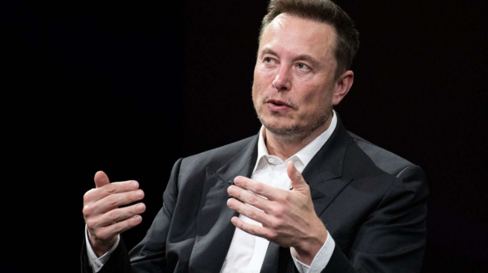
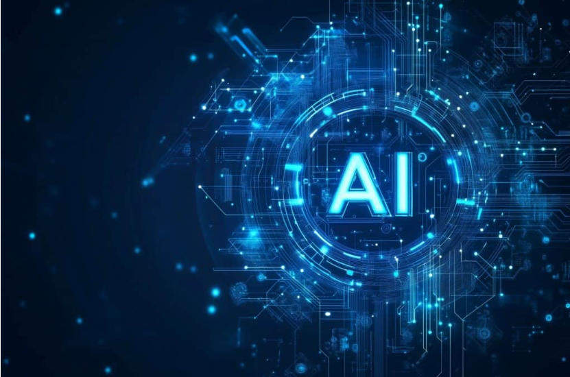

Elon Musk aponta três pilares que, segundo ele, devem guiar o futuro da IA
Empresário lista princípios que, segundo ele, podem impedir que modelos avancem rumo ao comportamento destrutivo
Leandro Costa Criscuolo | 03/12/2025 06h30

(Imagem: Frederic Legrand - COMEO/Shutterstock)

Elon Musk voltou a defender cautela no avanço da inteligência artificial e descreveu três princípios que, em sua visão, são essenciais para garantir que a tecnologia siga um caminho positivo.
O empresário participou de um podcast com o bilionário indiano Nikhil Kamath, no qual reforçou que não há garantias de que a IA conduzirá a humanidade a um futuro seguro. “Tecnologias poderosas podem ser destrutivas”, afirmou.

CEO da Tesla diz que tecnologia precisa buscar a verdade e preservar a continuidade humana – Imagem: Anggalih Prasetya/Shutterstock
Críticas e histórico no setor de IA
- Musk, que ajudou a fundar a OpenAI antes de deixar o conselho em 2018, tem criticado a empresa desde o lançamento do ChatGPT, alegando que ela se afastou de uma missão inicial voltada ao desenvolvimento seguro. Ele lançou sua própria companhia, a xAI, em 2023, criadora do chatbot Grok.
- Segundo o executivo, o ritmo acelerado de avanços torna a IA potencialmente mais arriscada para a sociedade do que setores altamente regulados, como transporte aéreo e indústria farmacêutica.
- No podcast, Musk destacou que modelos devem priorizar a busca pela verdade para evitar conclusões distorcidas.
- Ele alertou que sistemas treinados com informações imprecisas podem apresentar “alucinações” — respostas incorretas —, problema que tem afetado empresas como a Apple.